-
To verify the functionalities of report master
14:47:12 PM / 32:03:389 Fail
To verify the functionalities of report master
02.22.2023 14:47:12 02.22.2023 14:49:15 32:03:389 · #test-id=1FailTo verify the user can able to create the report parameterGiven Navigate to ULS application URLstepdefinitions.HooksClass.addScreenshot(io.cucumber.java.Scenario)screenshot Then login with valid maker credentialsstepdefinitions.HooksClass.addScreenshot(io.cucumber.java.Scenario)screenshot
Then login with valid maker credentialsstepdefinitions.HooksClass.addScreenshot(io.cucumber.java.Scenario)screenshot And go to configuration main menustepdefinitions.HooksClass.addScreenshot(io.cucumber.java.Scenario)screenshot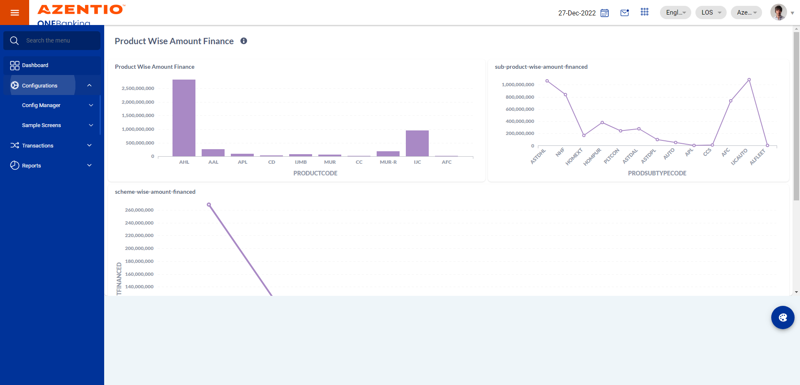And click on config Manager main modulestepdefinitions.HooksClass.addScreenshot(io.cucumber.java.Scenario)screenshot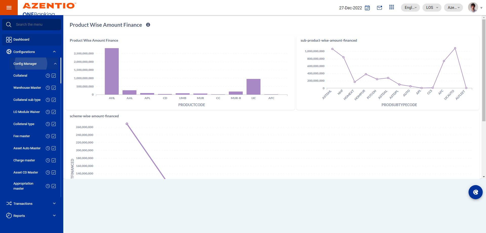And User click the report master edit iconstepdefinitions.HooksClass.addScreenshot(io.cucumber.java.Scenario)screenshot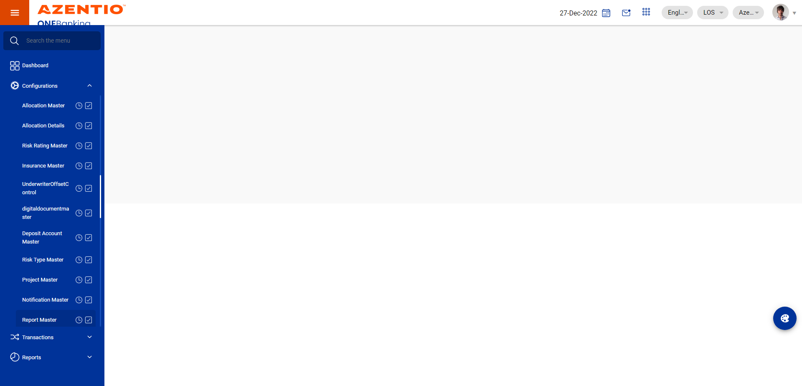Then User verify the functionality of Add button in report masterstepdefinitions.HooksClass.addScreenshot(io.cucumber.java.Scenario)screenshotAnd User verify the functionality of Back button in report masterstepdefinitions.HooksClass.addScreenshot(io.cucumber.java.Scenario)screenshot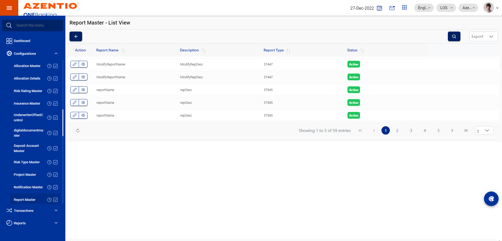Then User verify the functionality of Add button in report masterstepdefinitions.HooksClass.addScreenshot(io.cucumber.java.Scenario)screenshot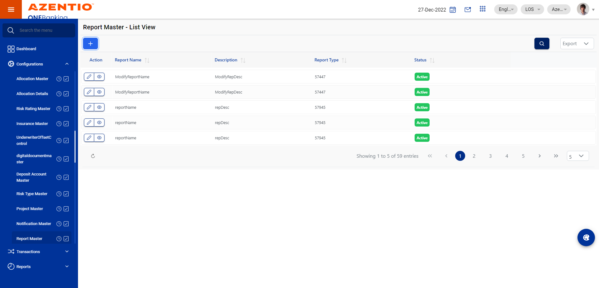And User click the report parameter add icon in report masterstepdefinitions.HooksClass.addScreenshot(io.cucumber.java.Scenario)screenshot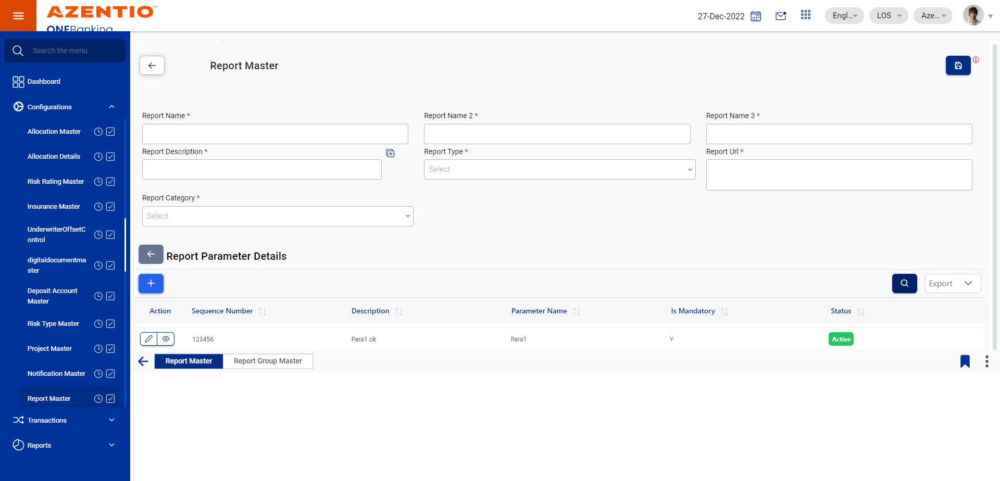And User Enter the Template in report parameterstepdefinitions.HooksClass.addScreenshot(io.cucumber.java.Scenario)screenshot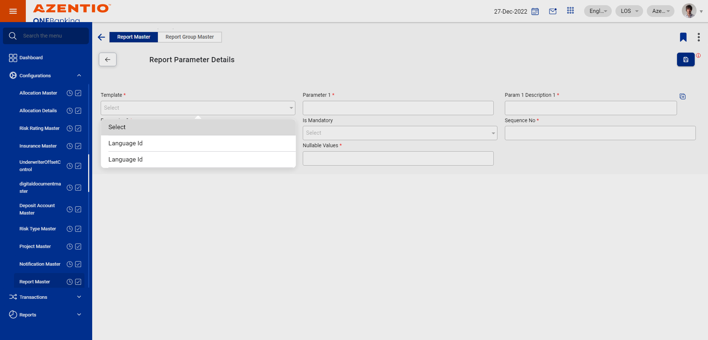And User Enter the parameter1 in report parameterstepdefinitions.HooksClass.addScreenshot(io.cucumber.java.Scenario)screenshotAnd User Enter the param1 Description1 in report parameterstepdefinitions.HooksClass.addScreenshot(io.cucumber.java.Scenario)screenshotAnd User Enter the param1 Description2 in report parameterstepdefinitions.HooksClass.addScreenshot(io.cucumber.java.Scenario)screenshotAnd User Enter the param1 Description3 in report parameterstepdefinitions.HooksClass.addScreenshot(io.cucumber.java.Scenario)screenshotAnd User Enter the parameter2 in report parameterstepdefinitions.HooksClass.addScreenshot(io.cucumber.java.Scenario)screenshotAnd User Enter the param2 Description2 in report parameterstepdefinitions.HooksClass.addScreenshot(io.cucumber.java.Scenario)screenshotAnd User Enter the param2 Description3 in report parameterstepdefinitions.HooksClass.addScreenshot(io.cucumber.java.Scenario)screenshotAnd User Enter the IsMandatory in report parameterstepdefinitions.HooksClass.addScreenshot(io.cucumber.java.Scenario)screenshotAnd User Enter the sequenceNo in report parameterstepdefinitions.HooksClass.addScreenshot(io.cucumber.java.Scenario)screenshot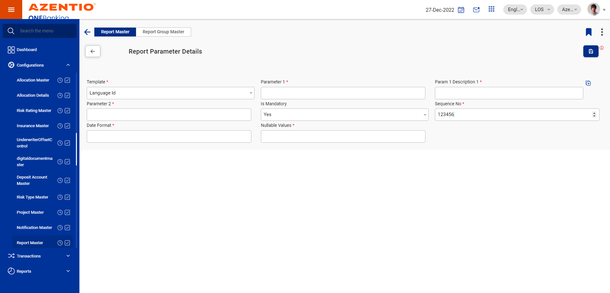And User Enter the date format in report parameterstepdefinitions.HooksClass.addScreenshot(io.cucumber.java.Scenario)screenshotAnd User Enter the Nullable values in report parameterstepdefinitions.HooksClass.addScreenshot(io.cucumber.java.Scenario)screenshotThen User click the save icon in report masterstepdefinitions.HooksClass.addScreenshot(io.cucumber.java.Scenario)screenshot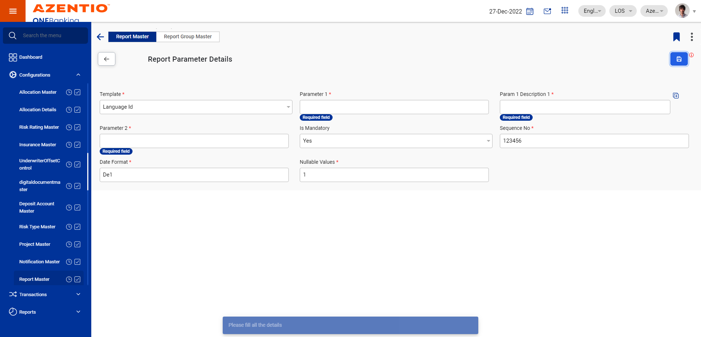Then User get the confirmation message in report masterstepdefinitions.HooksClass.addScreenshot(io.cucumber.java.Scenario)screenshot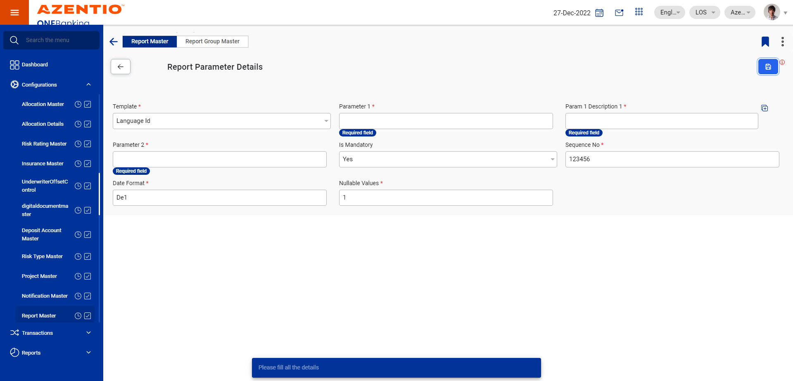Then User click the inboxmail icon in report masterstepdefinitions.HooksClass.addScreenshot(io.cucumber.java.Scenario)screenshot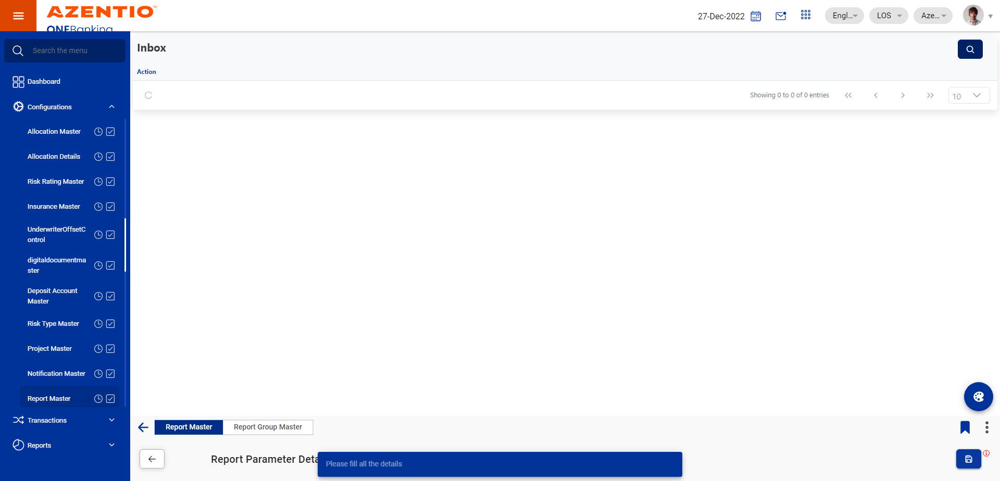And User get the reference id in report masterstepdefinitions.HooksClass.addScreenshot(io.cucumber.java.Scenario)screenshot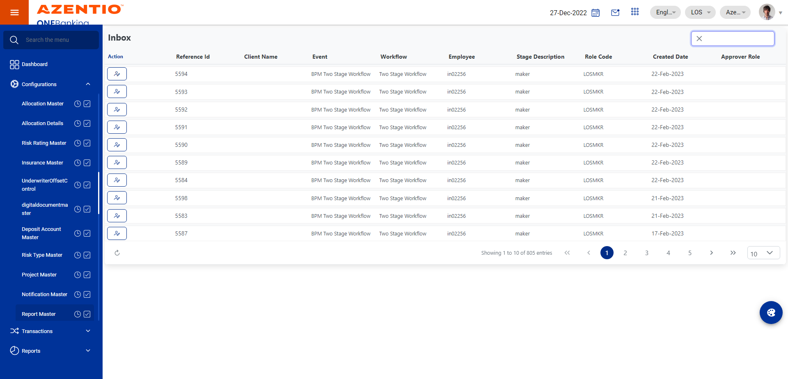And User click the action edit icon in submit stage in report masterstepdefinitions.HooksClass.addScreenshot(io.cucumber.java.Scenario)screenshot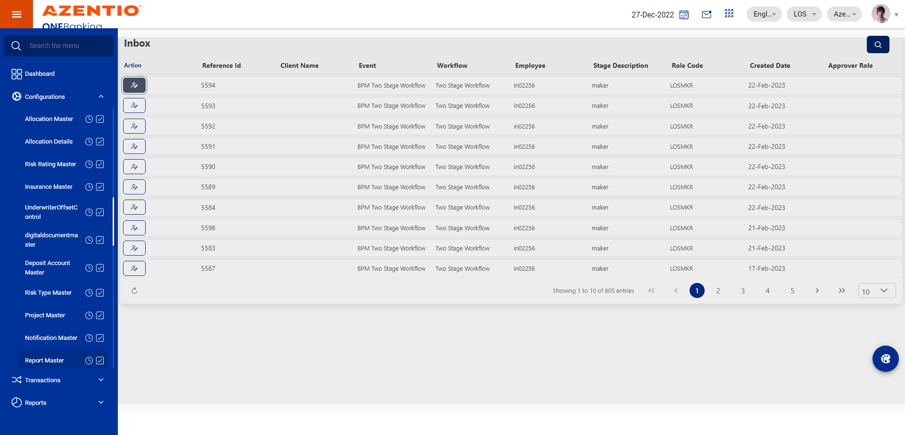And User click the submit icon in report masterstepdefinitions.HooksClass.addScreenshot(io.cucumber.java.Scenario)screenshot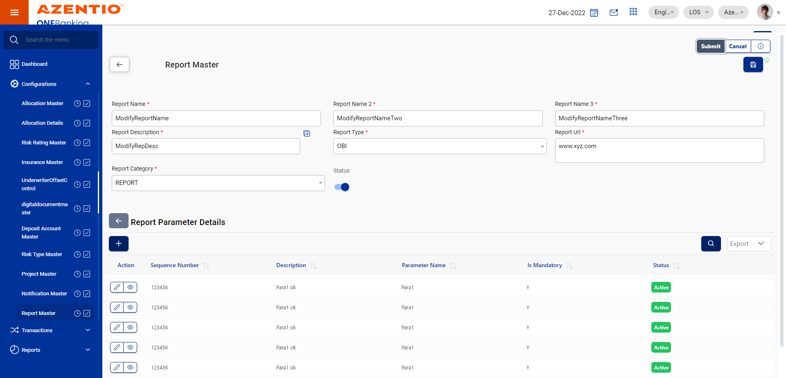And User enter the popup remark and click the popup submitstepdefinitions.HooksClass.addScreenshot(io.cucumber.java.Scenario)screenshot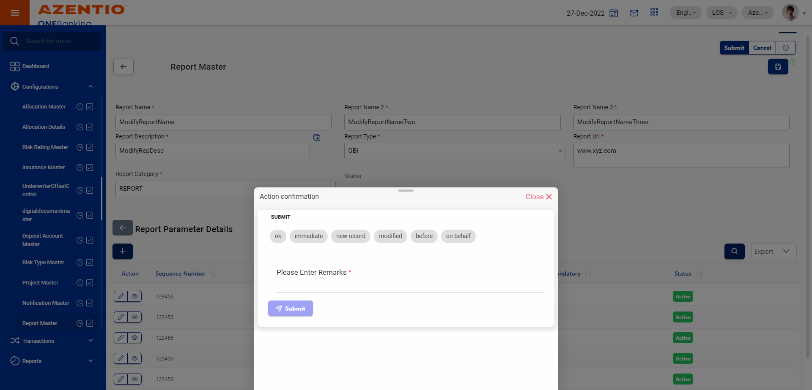And user get the popup message and get the checker id in report masterstepdefinitions.HooksClass.addScreenshot(io.cucumber.java.Scenario)screenshot
And go to configuration main menustepdefinitions.HooksClass.addScreenshot(io.cucumber.java.Scenario)screenshot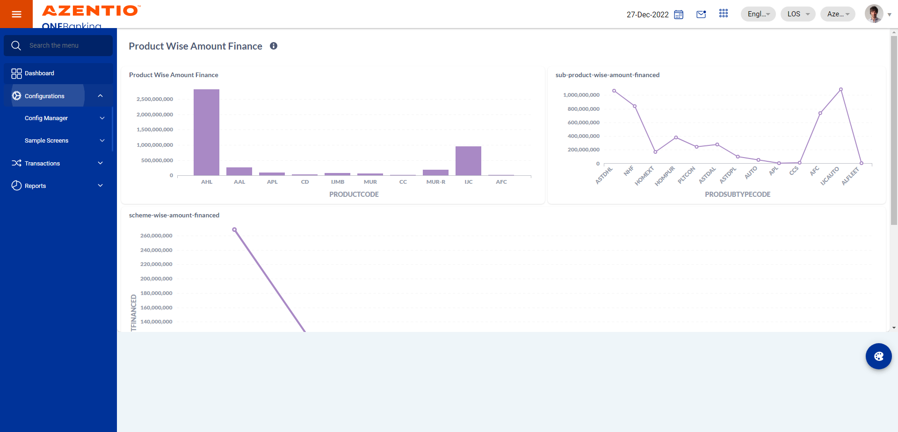And click on config Manager main modulestepdefinitions.HooksClass.addScreenshot(io.cucumber.java.Scenario)screenshot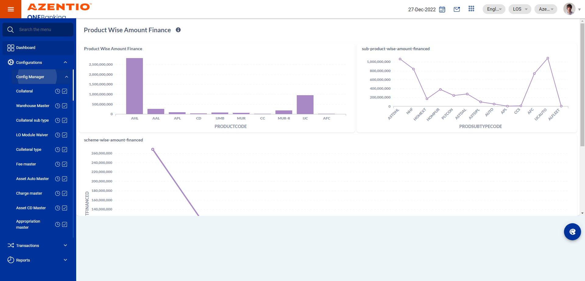And User click the report master edit iconstepdefinitions.HooksClass.addScreenshot(io.cucumber.java.Scenario)screenshot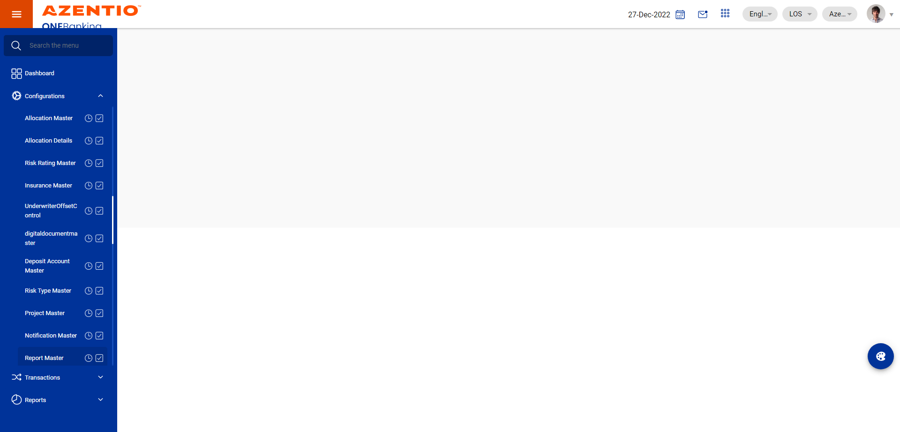Then User verify the functionality of Add button in report masterstepdefinitions.HooksClass.addScreenshot(io.cucumber.java.Scenario)screenshotAnd User verify the functionality of Back button in report masterstepdefinitions.HooksClass.addScreenshot(io.cucumber.java.Scenario)screenshot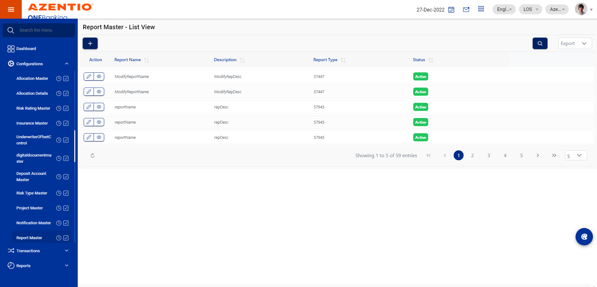Then User verify the functionality of Add button in report masterstepdefinitions.HooksClass.addScreenshot(io.cucumber.java.Scenario)screenshot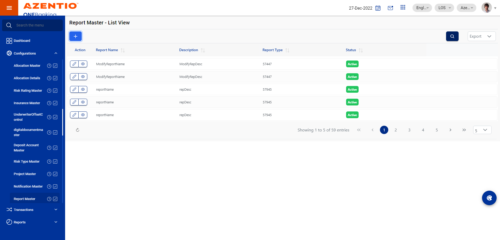And User click the report parameter add icon in report masterstepdefinitions.HooksClass.addScreenshot(io.cucumber.java.Scenario)screenshot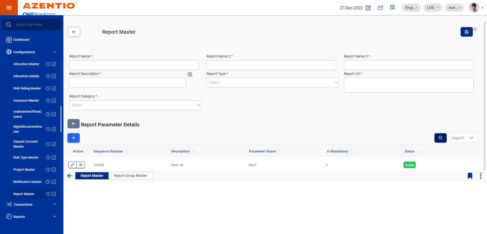And User Enter the Template in report parameterstepdefinitions.HooksClass.addScreenshot(io.cucumber.java.Scenario)screenshot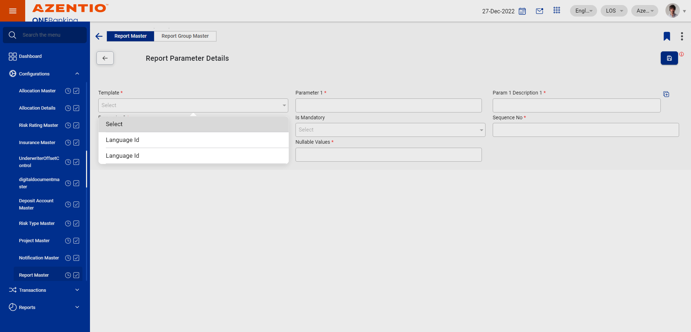And User Enter the parameter1 in report parameterstepdefinitions.HooksClass.addScreenshot(io.cucumber.java.Scenario)screenshotAnd User Enter the param1 Description1 in report parameterstepdefinitions.HooksClass.addScreenshot(io.cucumber.java.Scenario)screenshotAnd User Enter the param1 Description2 in report parameterstepdefinitions.HooksClass.addScreenshot(io.cucumber.java.Scenario)screenshotAnd User Enter the param1 Description3 in report parameterstepdefinitions.HooksClass.addScreenshot(io.cucumber.java.Scenario)screenshotAnd User Enter the parameter2 in report parameterstepdefinitions.HooksClass.addScreenshot(io.cucumber.java.Scenario)screenshotAnd User Enter the param2 Description2 in report parameterstepdefinitions.HooksClass.addScreenshot(io.cucumber.java.Scenario)screenshotAnd User Enter the param2 Description3 in report parameterstepdefinitions.HooksClass.addScreenshot(io.cucumber.java.Scenario)screenshotAnd User Enter the IsMandatory in report parameterstepdefinitions.HooksClass.addScreenshot(io.cucumber.java.Scenario)screenshotAnd User Enter the sequenceNo in report parameterstepdefinitions.HooksClass.addScreenshot(io.cucumber.java.Scenario)screenshot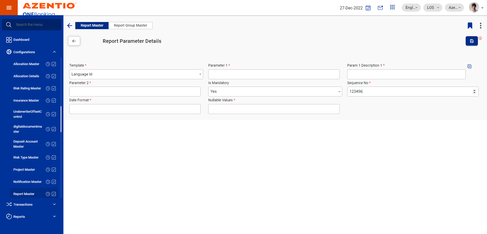And User Enter the date format in report parameterstepdefinitions.HooksClass.addScreenshot(io.cucumber.java.Scenario)screenshotAnd User Enter the Nullable values in report parameterstepdefinitions.HooksClass.addScreenshot(io.cucumber.java.Scenario)screenshotThen User click the save icon in report masterstepdefinitions.HooksClass.addScreenshot(io.cucumber.java.Scenario)screenshot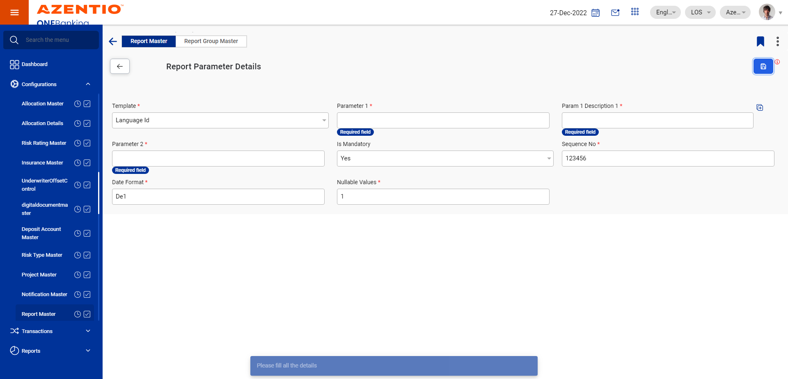Then User get the confirmation message in report masterstepdefinitions.HooksClass.addScreenshot(io.cucumber.java.Scenario)screenshot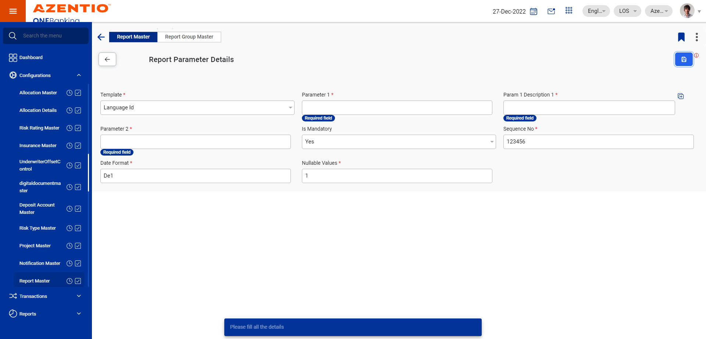Then User click the inboxmail icon in report masterstepdefinitions.HooksClass.addScreenshot(io.cucumber.java.Scenario)screenshot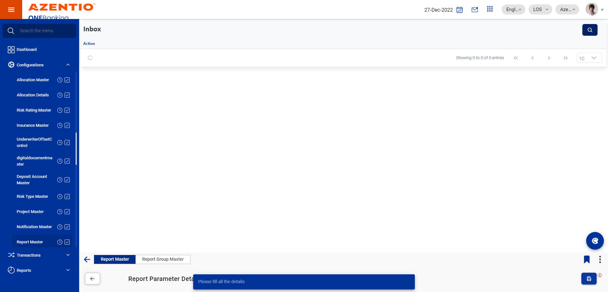And User get the reference id in report masterstepdefinitions.HooksClass.addScreenshot(io.cucumber.java.Scenario)screenshot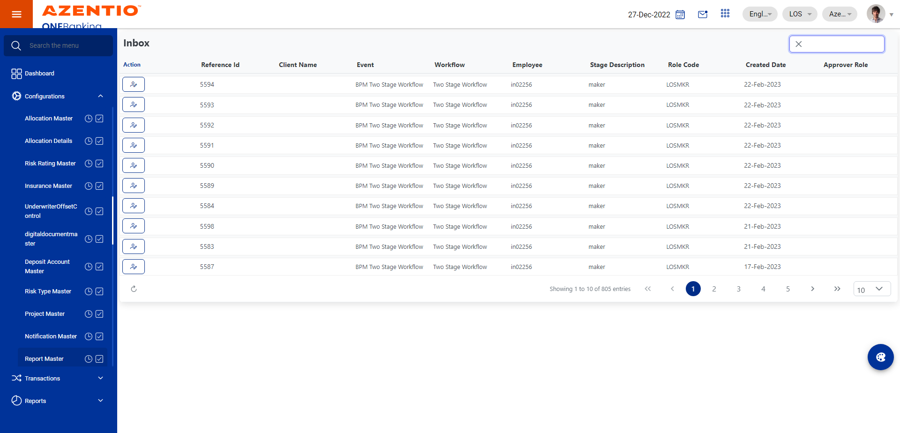And User click the action edit icon in submit stage in report masterstepdefinitions.HooksClass.addScreenshot(io.cucumber.java.Scenario)screenshot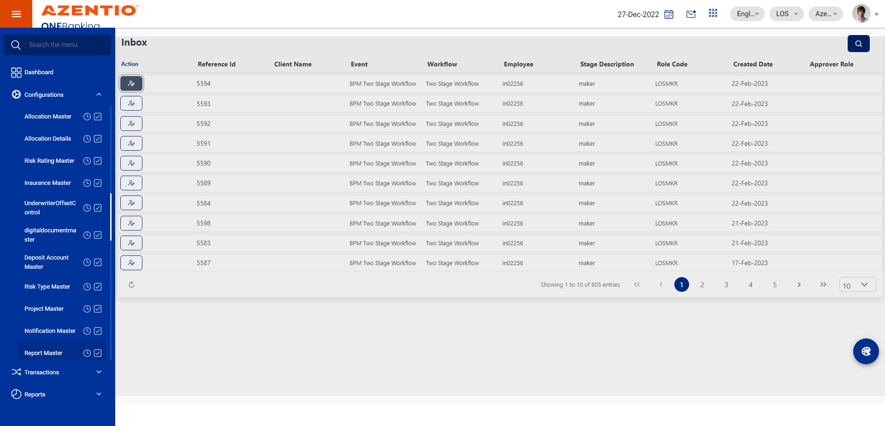And User click the submit icon in report masterstepdefinitions.HooksClass.addScreenshot(io.cucumber.java.Scenario)screenshot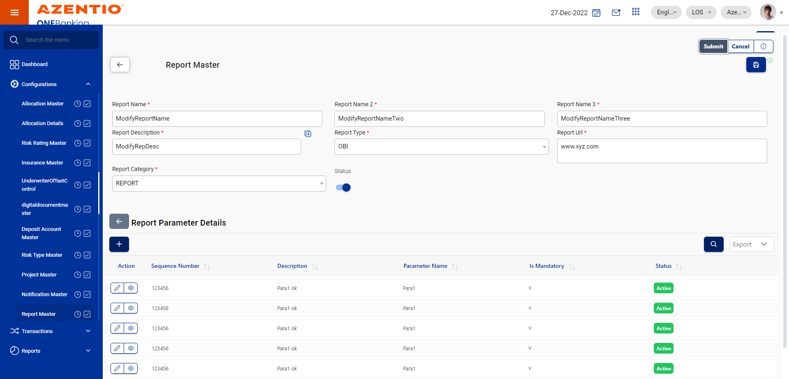And User enter the popup remark and click the popup submitstepdefinitions.HooksClass.addScreenshot(io.cucumber.java.Scenario)screenshot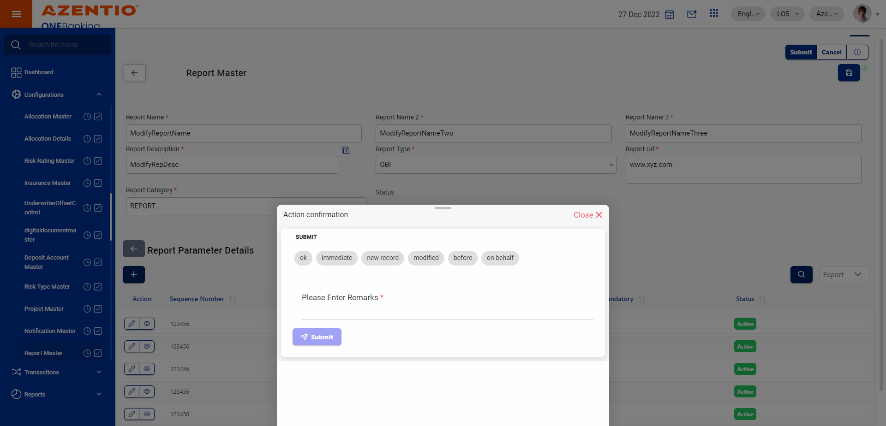And user get the popup message and get the checker id in report masterstepdefinitions.HooksClass.addScreenshot(io.cucumber.java.Scenario)screenshot
Started
Feb 22, 2023 02:47:10 PM
Ended
Feb 22, 2023 02:49:15 PM
Features Passed
0
Features Failed
1
Features
Scenarios
Steps
Timeline
Tags
| Name | Passed | Failed | Skipped | Others | Passed % |
|---|---|---|---|---|---|
| @AT-RA-T012 | 0 | 1 | 0 | 0 | 0% |
System/Environment
| Name | Value |
|---|---|
| version | 10 |
| os | windows |
-
@AT-RA-T012
1 tests
@AT-RA-T012
1 failedStatus Timestamp TestName Fail 14:47:12 PM To verify the user can able to create the report parameter To verify the functionalities of report master.To verify the user can able to create the report parameter
-
org.openqa.selenium.TimeoutException
1 tests
org.openqa.selenium.TimeoutException
1 failedStatus Timestamp TestName Fail 14:48:13 PM And user get the popup message and get the checker id in report master To verify the functionalities of report master.To verify the user can able to create the report parameter.And user get the popup message and get the checker id in report master